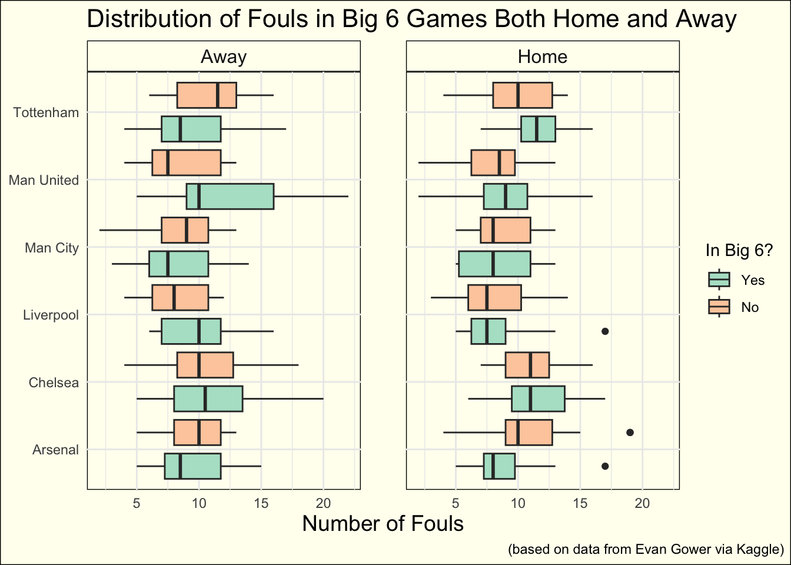

library(tidyverse)
library(here)
library(knitr)
theme_set(theme_minimal())
soccer <- read_csv(here("data/soccer.csv"))Introduction
While scrolling through the Tidy Tuesday data, I found a data set of the Premier League Matches from 2021-2022. In this data, they included team goals and results for both the first half and the second half. They also included the referee, team shots, team shots on target, team fouls, team yellow cards, and team red cards. When thinking about the variables that this data had, I thought of the question is there bias towards the “big 6”. For those of you who don’t follow the Premier League, the big 6 consists of Arsenal, Liverpool, Manchester United, Manchester City, Chelsea, and Tottenham. My goal was to see if there was a notable difference in the number of fouls produced for the big six vs their opponents.
Data Cleaning
My first step was to get rid of the halftime data, the shots data, the goals data, the winners data, and the corners data because I wouldn’t be needing it for my analysis. I chose to keep the referee variable and cards variables just in case I want to use it later. I also wanted to make the variable names easier to interpret.
soccerTidy <-
soccer |>
select(-starts_with("HT")) |>
select(-(4:6)) |>
select(-(5:8)) |>
select(-(7:8)) |>
rename('HomeFouls' = HF) |>
rename('AwayFouls' = AF) |>
rename('HomeYellow' = HY) |>
rename('AwayYellow' = AY) |>
rename('HomeRed' = HR) |>
rename('AwayRed' = AR)Below is a sample of what the data now looks like.
kable(head(soccerTidy))| Date | HomeTeam | AwayTeam | Referee | HomeFouls | AwayFouls | HomeYellow | AwayYellow | HomeRed | AwayRed |
|---|---|---|---|---|---|---|---|---|---|
| 13/08/2021 | Brentford | Arsenal | M Oliver | 12 | 8 | 0 | 0 | 0 | 0 |
| 14/08/2021 | Man United | Leeds | P Tierney | 11 | 9 | 1 | 2 | 0 | 0 |
| 14/08/2021 | Burnley | Brighton | D Coote | 10 | 7 | 2 | 1 | 0 | 0 |
| 14/08/2021 | Chelsea | Crystal Palace | J Moss | 15 | 11 | 0 | 0 | 0 | 0 |
| 14/08/2021 | Everton | Southampton | A Madley | 13 | 15 | 2 | 0 | 0 | 0 |
| 14/08/2021 | Leicester | Wolves | C Pawson | 6 | 10 | 1 | 2 | 0 | 0 |
Preparing for Visuals
Next I needed to make multiple data frames, a home and away for the big 6 which could then be joined so I could compare how many fouls they got when versing non big 6 opponents.
Side Note: All of this was a huge pain, and there is likely a much easier way to do this. Below is all the code of making data frames and joining them together until I have something that works for showing the distribution.
big6_Home <-
soccerTidy |>
filter(HomeTeam %in% c('Arsenal', 'Liverpool', 'Man United', 'Man City', 'Chelsea', 'Tottenham')) |>
filter(!(AwayTeam %in% c('Arsenal', 'Liverpool', 'Man United', 'Man City', 'Chelsea', 'Tottenham')))
big6_Away <-
soccerTidy |>
filter(AwayTeam %in% c('Arsenal', 'Liverpool', 'Man United', 'Man City', 'Chelsea', 'Tottenham')) |>
filter(!(HomeTeam %in% c('Arsenal', 'Liverpool', 'Man United', 'Man City', 'Chelsea', 'Tottenham')))big6_fouls <-
big6_Home |>
group_by(HomeTeam) |>
mutate('Big_6' = 'Yes') |>
select(HomeTeam, HomeFouls, Big_6)
opp_fouls <-
big6_Home |>
group_by(HomeTeam) |>
mutate('Big_6' = 'No') |>
select(HomeTeam, AwayFouls, Big_6)
home_fouls <-
bind_rows(big6_fouls, opp_fouls) |>
pivot_longer(cols = c('HomeFouls', 'AwayFouls'),
names_to = 'Location',
values_to = 'Fouls') |>
select(-(Location)) |>
na.omit() |>
mutate(Location = 'Home')Abig6_fouls <-
big6_Away |>
group_by(AwayTeam) |>
mutate('Big_6' = 'Yes') |>
select(AwayTeam, AwayFouls, Big_6)
Aopp_fouls <-
big6_Away |>
group_by(AwayTeam) |>
mutate('Big_6' = 'No') |>
select(AwayTeam, HomeFouls, Big_6)
away_fouls <-
bind_rows(Abig6_fouls, Aopp_fouls) |>
pivot_longer(cols = c('HomeFouls', 'AwayFouls'),
names_to = 'Location',
values_to = 'Fouls') |>
select(-(Location)) |>
na.omit() |>
mutate(Location = 'Away') |>
rename('HomeTeam' = AwayTeam)fouls_df <-
bind_rows(home_fouls, away_fouls) |>
mutate(Big_6 = as_factor(Big_6))Plot 1
ggplot(data = fouls_df,
aes(x = HomeTeam,
y = Fouls,
fill = Big_6)) +
geom_boxplot(position = position_dodge(width = 1)) +
facet_wrap(vars(Location)) +
theme(axis.title = element_text(size = 14,),
strip.text = element_text(size = 12),
axis.title.y = element_blank(),
plot.title = element_text(size = 16,
hjust = 0),
panel.spacing = unit(2, 'lines')) +
labs(title = 'Distribution of Fouls in Big 6 Games Both Home and Away',
caption = '(based on data from Evan Gower via Kaggle)',
y = 'Number of Fouls',
fill = 'In Big 6?') +
coord_flip() +
scale_fill_brewer(palette = 'Pastel2')
This plot shows the distribution of fouls for all the Big 6 teams both home and away as well as their opponents. When I had this idea, I was expecting to see a somewhat lower distribution for all of the Big 6 teams relative to their opponent, but I was surprised. For the most part, the fouls seam relatively even with the biggest advantage appearing to be Arsenal in home games. Below I created a table to show the average number of fouls per game for each Big 6 team.
Table 1
tb6 <-
fouls_df |>
filter(Big_6 == 'Yes') |>
group_by(HomeTeam) |>
summarise('Fouls per Game for Big 6 Teams' = mean(Fouls))
tb <-
fouls_df |>
filter(Big_6 == 'No') |>
group_by(HomeTeam) |>
summarise('Fouls per Game for Opponents' = mean(Fouls)) |>
select(-HomeTeam)
tb <-
bind_cols(tb6, tb)
kable(tb)| HomeTeam | Fouls per Game for Big 6 Teams | Fouls per Game for Opponents |
|---|---|---|
| Arsenal | 9.285714 | 10.321429 |
| Chelsea | 11.214286 | 10.750000 |
| Liverpool | 9.214286 | 8.000000 |
| Man City | 8.321429 | 8.607143 |
| Man United | 10.357143 | 8.464286 |
| Tottenham | 10.357143 | 10.535714 |
This table shows that only a few Big 6 teams average less than their opponents, those being Arsenal, Man City, and Tottenham. I would say that for the most part, this shows that there isn’t bias towards the Big 6.
Conclusion
Ultimately, it seems as if there isn’t bias towards the Big 6 in terms of the number of fouls for them and for their opponents. As well, I was hoping to create some form of model to predict this, but it wasn’t a good possibility with this data set. Looking to the future, I likely would have added in another question and made a new visual as this one is super busy and not the best to interpret, but the process to get there took a while so I’ve decided to keep it. I might come back to this data in the future to try and answer a different question.
Connections to Class
I used many techniques we’ve learned in class in this post. Some being the dplyr tools such as filtering and selecting, binding and merging tables. I also used most of the ggplot techniques from faceting, flipping the coordinates, and adjusting the theme elements to make it look nicer.